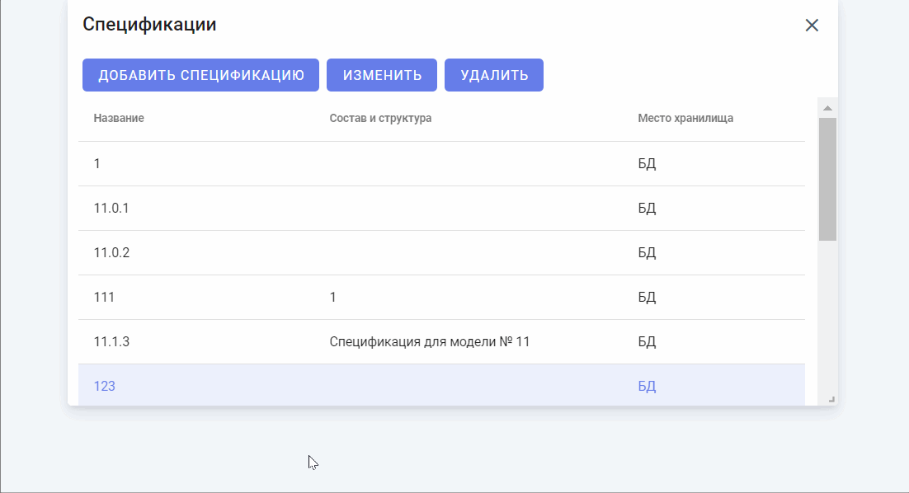
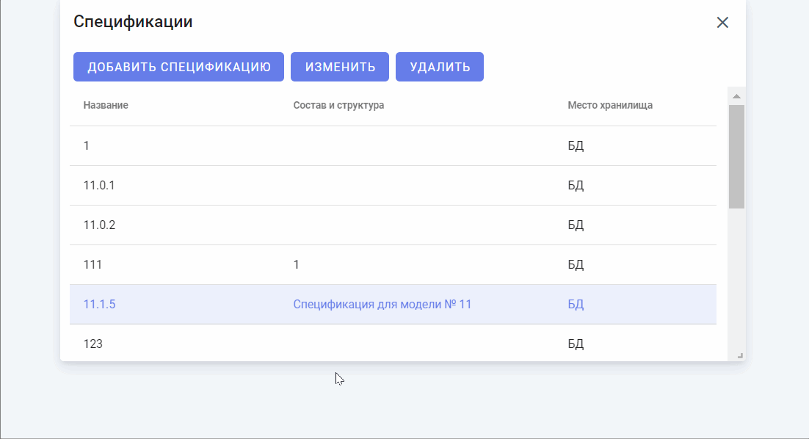
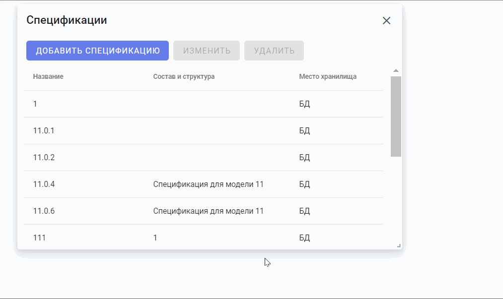

Виджет предназначен для отображения спецификаций связей между узлами. Виджет позволяет просматривать спецификации, добавлять спецификации, редактировать спецификации и удалять их. Виджет состоит из следующих элементов:
Для добавление новой спецификации необходимо нажать на кнопку "Добавить спецификацию". При нажатии на кнопку откроется форма создания новой спецификации. В форме необходимо заполнить все поля:
Далее необходимо нажать на кнопку "Создать". Новая спецификация отобразится в списке на области отображения списка спецификаций. Для отмены операции необходимо нажать на кнопку "Отмена".

Для изменения спецификации необходимо выбрать определенную спецификацию из списка и нажать на кнопку "Изменить". При нажатии на кнопку откроется форма изменения спецификации. В форме можно изменить поля:
Далее необходимо нажать на кнопку "Сохранить". Изменения спецификации отобразятся в списке на области отображения списка спецификаций. Для отмены операции необходимо нажать на кнопку "Отмена".

Для удаления спецификаций необходимо выбрать определенную спецификацию из списка и нажать на кнопку "Удалить". При нажатии на кнопку откроется форма подтверждения удаления спецификации. Необходимо нажать на кнопку "Удалить" при подтверждении операции и затем кнопку "Сохранить". Для отмены операции необходимо нажать на кнопку "Отмена".
